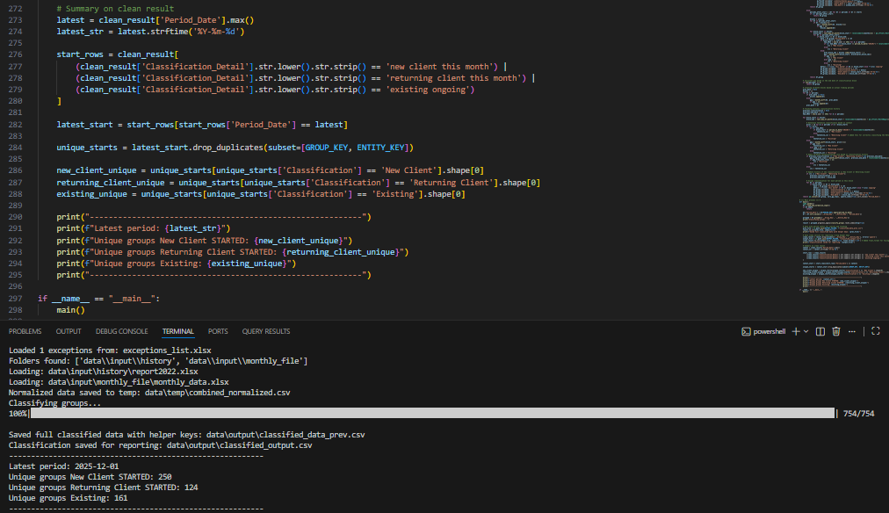
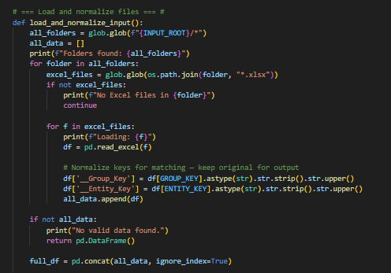
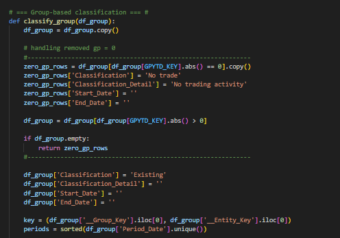
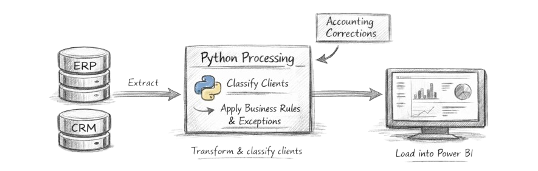
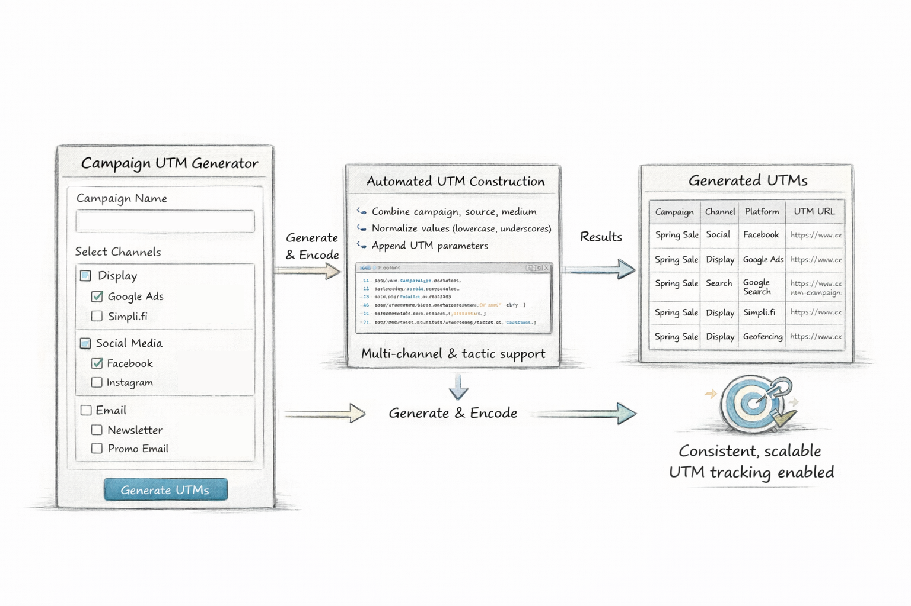

I created a Python-based client classification application designed to process large-scale trading and revenue data using custom business logic. The application dynamically classifies clients as New Client, Returning Client, Existing, or No Trade, delivering consistent and auditable classifications across reporting periods while significantly reducing processing time.

Customer trading classifications were produced as a monthly report and maintained in large Excel workbooks.
Each cycle required reviewing up to four years of historical trading data across 15+ entities within the Europe region to determine whether customers should be classified as New Client, Returning Client, or Existing.
As data volume grew, this Excel-based process became increasingly inefficient:
The workflow was slow, difficult to validate, and increasingly fragile.
A Python application was developed to replace the Excel-driven workflow and automate customer trading classification while preserving existing business rules.
The solution now processes trading activity for all 15+ entities in the Europe region and produces accurate classifications of New Client, Returning Client, or Existing.
The automated workflow provides several key improvements over the manual Excel process:
This automated, scalable approach ensures that classifications are accurate, repeatable, and ready for integration into monthly performance monitoring workflows.


The automated solution replaced a multi-day, Excel-driven monthly process with a repeatable and scalable pipeline used across all 15+ entities in the Europe region.
The impact of this solution includes:
The solution made monthly reporting predictable, auditable, and scalable as historical data continues to grow, while supporting critical performance monitoring across the region.
Output data is formatted and ready to be refreshed directly in Power BI for reporting and visualization.

Note: All metrics presented are based on professional experience and have been anonymised, aggregated, or proportionally adjusted to ensure compliance with confidentiality and data protection standards.

Audit, transform, and enrich CRM data to ensure accuracy, standardise key fields consistently.
100% data-driven decisions enabled

Finance dashboard visualising key KPIs, profitability trends, and cost insights to drive decision-making.
QlikSense • Excel • PowerBI

A Python + Streamlit application that automates UTM URL creation across channels and tactics.
90% faster URL generation